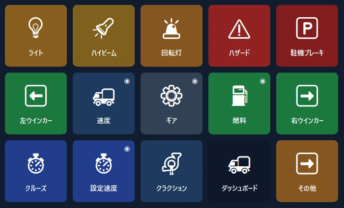
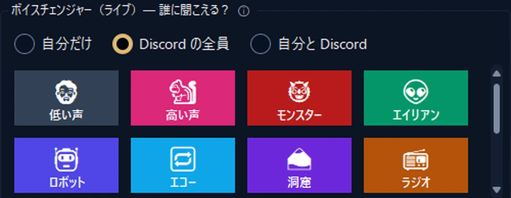
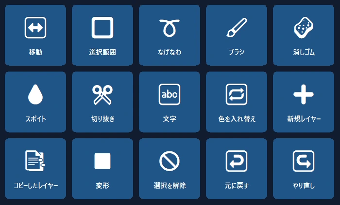
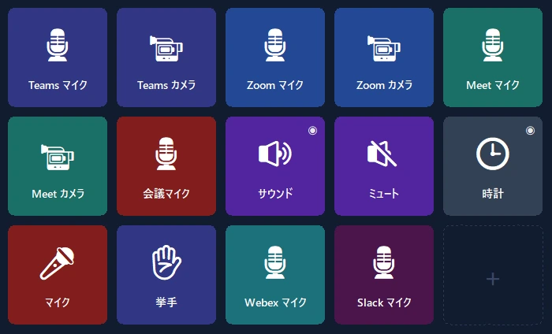

スマホが PC のコントロールパネルに。
ワンタップのショートカット、OBS、Discord、Spotify、ゲーム用パネル。USB、Wi‑Fi、モバイルデータで接続し、エンドツーエンドで暗号化。
トラックのダッシュボードが、スマホに。
速度、回転数、燃料、リアルな警告灯をリアルタイムで表示。トラックの操作はワンタップで。
- 🚦本物のダッシュボード速度、制限速度、回転数、燃料、到着時刻。警告灯はゲームと同じように点灯します。
- 🕹ワンタップ操作ライト、パーキングブレーキ、クルーズコントロール。ワンタップで左右を見渡せます。
- 📳設定不要ゲームを起動するとスマホが既製のパネルを提案し、以降は毎回自動で切り替わります。

配信を片手でコントロール。
高価な機器の代わりにスマホを。OBS、効果音、Discord、音楽をひとつの画面で。
- 🎬OBS の操作シーン、録画と配信、タイマーをボタン上で。
- 📳サウンドパネルと音楽既製のサウンドを再生し、Spotify とアプリごとの音量をひとつの画面で操作。
- 🎙ボイススタジオ自然な女性・男性・子どもの声、または自分の声で。Discord のマイクもワンタップでミュート。


プログラムを開けば、パネルは準備完了。
Photoshop、Premiere Pro、After Effects、Illustrator、DaVinci Resolve、Blender、Figma、VS Code の公式ショートカットに基づくパネル。
- ✨設定不要プログラムが前面に来るとスマホがパネルを提案し、以降は自動で切り替わります（Pro）。
- ⌨正しいショートカットツール、レイヤー、取り消し、マーカー。各プログラムの標準ショートカットで。
マイクはワンタップで。
ショートカットを設定しなくても、Teams、Zoom、Meet、Webex、Slack のマイクをミュート。会議ウィンドウが背面にあっても使えます。
- 🎙そのプログラムだけWindows は会議プログラムのマイクだけをミュートします。ほかのプログラムには影響しません。
- 🔴状態がひと目でわかるマイクがミュートの間、ボタンのランプが赤く点灯します。無料版でも使えます。

デスクでいちばん便利な画面。
既製のレイアウトで 1 分でスタート。プログラムの本物のロゴが自動で表示されます。
セカンドスクリーン
PC の画面をスマホに映し、タッチマウスやキーボードとして使えます。
アプリごとの音量
プログラムごとに音量を個別に調整。ヘッドホン ↔ スピーカーもワンタップ。
スマートページ
ページが前面のプログラムに合わせて切り替わります。タイマー、フォルダ、複数ステップのアクションも。
どこからでも接続
同じ Wi‑Fi は不要。モバイルデータでも、複数の PC でも使えます。
暗号化クラウドバックアップ
アカウントなしでレイアウトを暗号化して保存し、新しい PC で復元できます。
プライバシー
アカウントなし、広告なし、トラッキングなし。ボタンはあなたのデバイスにだけ保存されます。
1 分で準備完了。
プログラムをインストール
Windows 版 PanelDeck を無料でダウンロードして開きます。
QR をスキャン
スマホアプリが QR コードで数秒で接続します。
タップするだけ
既製のレイアウトを選ぶか、自分のボタンを作成します。
一度払えば、ずっと使える。
サブスクリプションなし、広告なし、トラッキングなし。すべてのアップデートを含みます。Google Play ではお住まいの国の現地価格が表示されます。
無料
- USB、Wi‑Fi、モバイルデータで接続
- 最初のページに 6 ボタン
- ショートカット、メディア、プログラム起動、Discord、タイマー
PanelDeck Pro
発売記念価格。その後は 6.99 ドル。7 日間無料でお試し。
- 6 タブ、フォルダとボタンは無制限
- セカンドスクリーン、音量スライダー、ライブ情報
- トラックパネル、ボイススタジオ、プログラム起動時のパネル
- 暗号化クラウドバックアップ
知っておきたいこと
アカウントは必要ですか？
いいえ。PanelDeck はアカウントを求めません。ボタンはあなたのデバイスにだけ保存されます。
外出先でも使えますか？
はい。同じ Wi‑Fi がなくても、スマホはモバイルデータ経由でエンドツーエンド暗号化して接続します。
どのゲームに対応していますか？
Euro Truck Simulator 2 と American Truck Simulator に完全対応しています。レースとフライトシミュレーターのライブパネルはベータ版です。
iPhone 版はありますか？
現在は Android のみです。iPhone・iPad 版を予定しています。
Windows に「Windows によって PC が保護されました」と表示されたら？
「詳細情報」→「実行」をクリックしてください。詳しくはインストールガイドをご覧ください。